Facsimile of Sol LeWitt's wall drawings
Interactive installation
Year: 2015
I had two responses to an assignment in which I had to design an interpretive facsimile for Sol LeWitt’s wall drawings: an interactive installation and a wall drawing by using masking tapes!
The interactive wall was inspired by one of LeWitt’s drawing instructions (all architectural points connected by straight line). A camera detects the stickers on the wall and the program draws lines and shapes by connecting those stickers as endpoints. It fills the generated shapes with the color theme chosen by the users in the beginning of their experience!
The second part is a tribute to the drafters who give life to Sol LeWitt’s instructions. The fact that they are nowhere in the finished works made me think of a facsimile that features the craftsmanship part of the work and shows their role in the final work. In order to do that, I recreated one of his works from the “Forms Derived From A Cube” series by using masking tapes which have been always used by the drafters as supporting materials in the process of drawing.
Part 1: INTERACTIVE WALL
 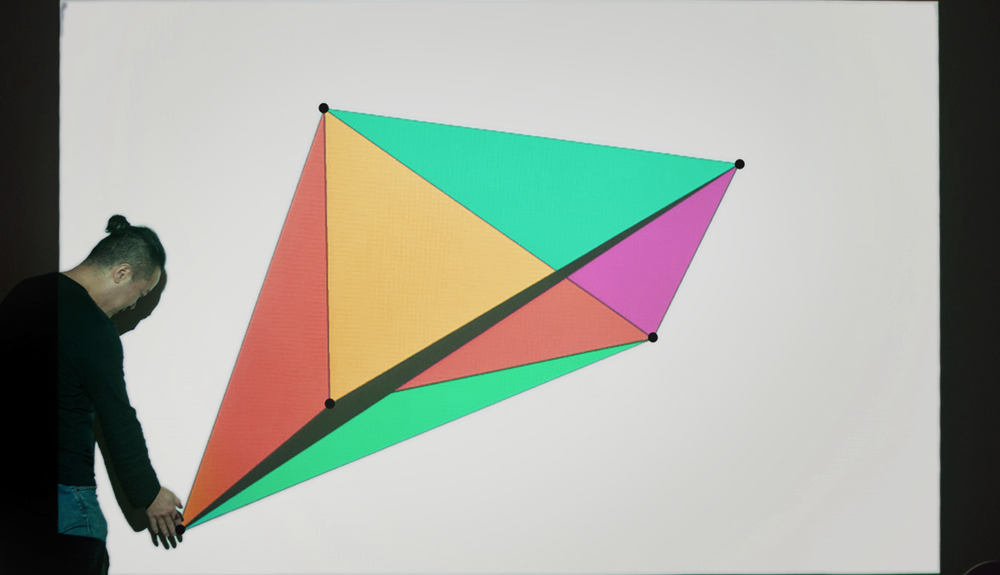
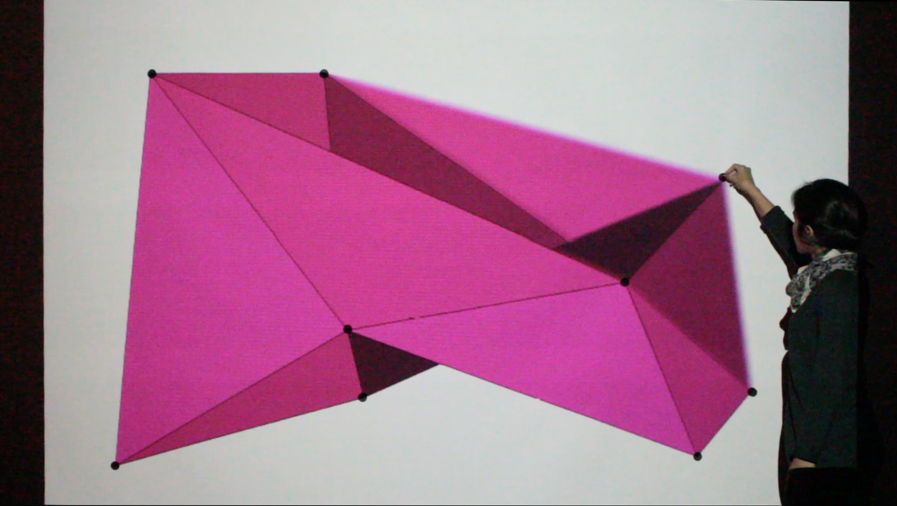
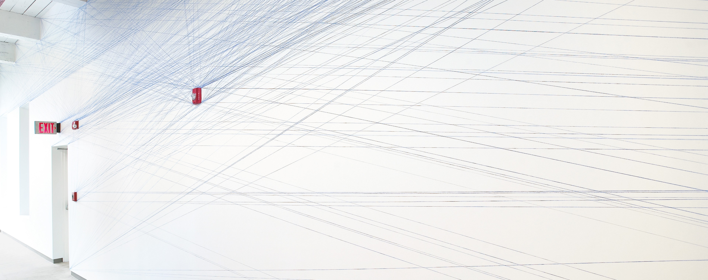
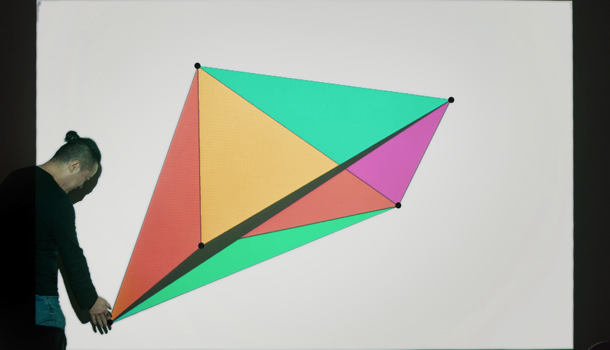
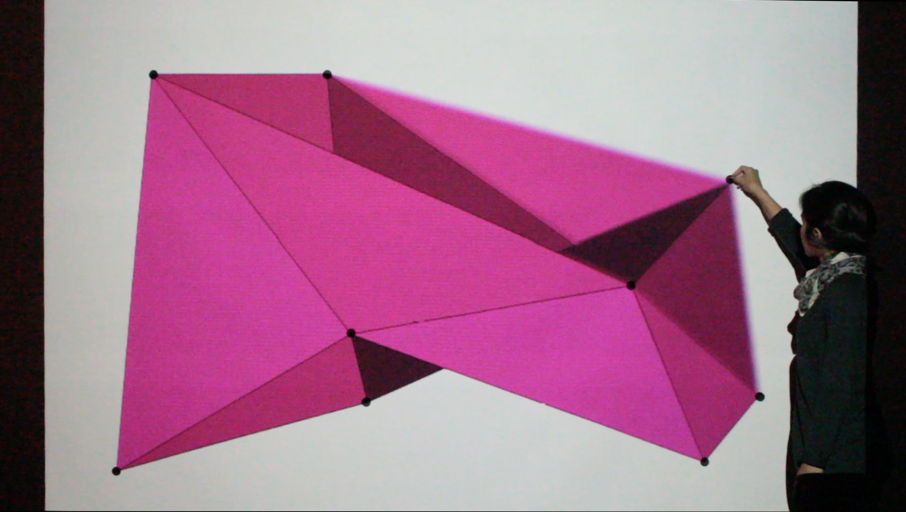
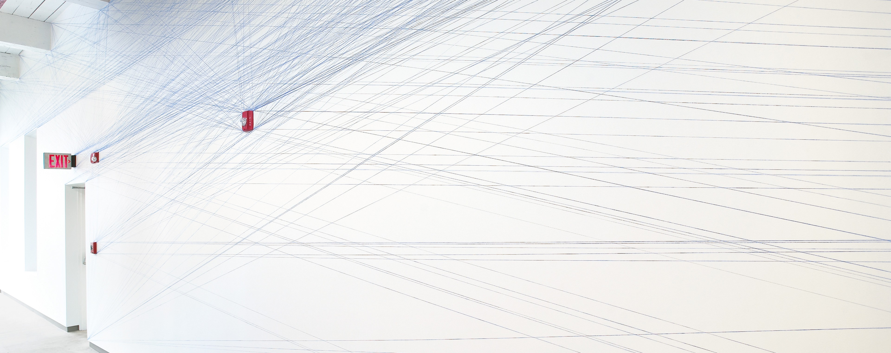
WALL DRAWING 51
LeWitt Collection, Chester, Connecticut
Photo: www.massmoca.org
Part 2: WALL DRAWING
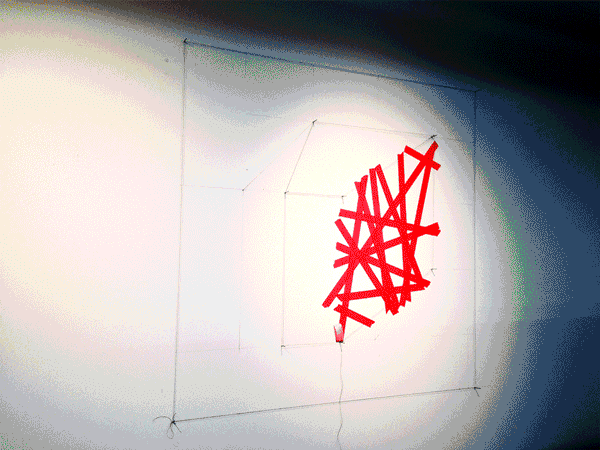 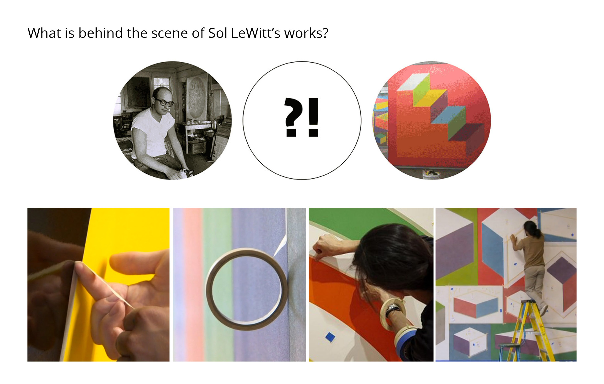 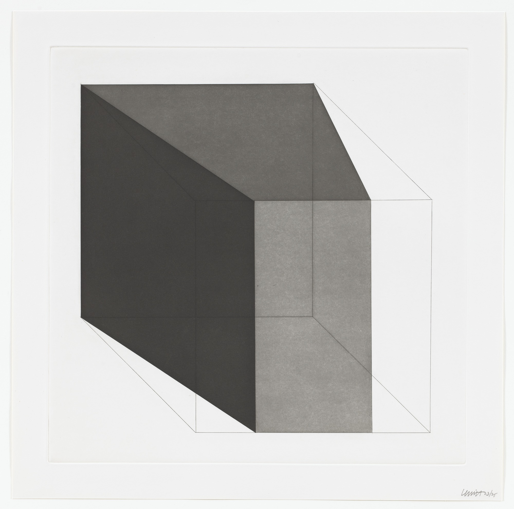UNTITLED, SOL LEWITT
from Forms Derived From A Cube series
Photo: www.moma.org
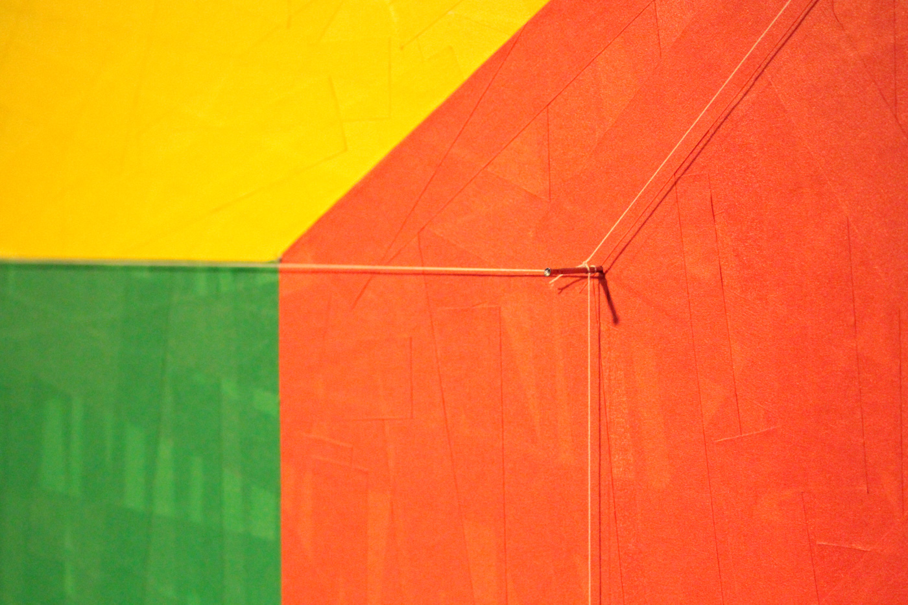 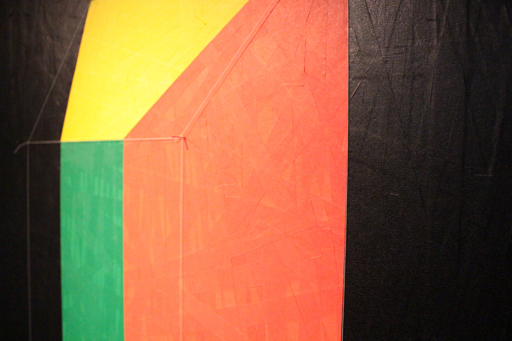 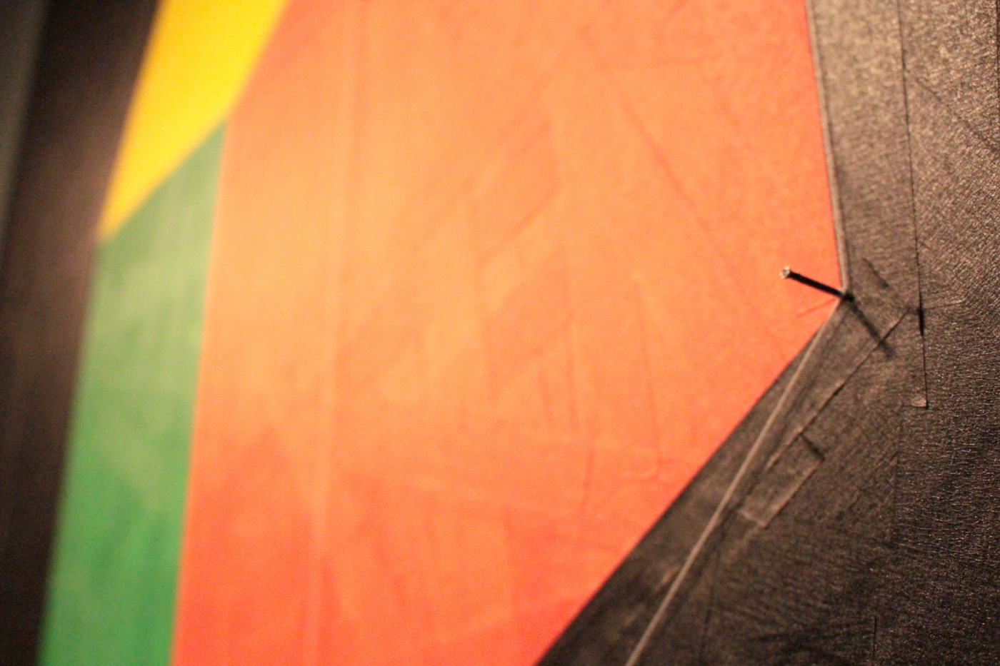 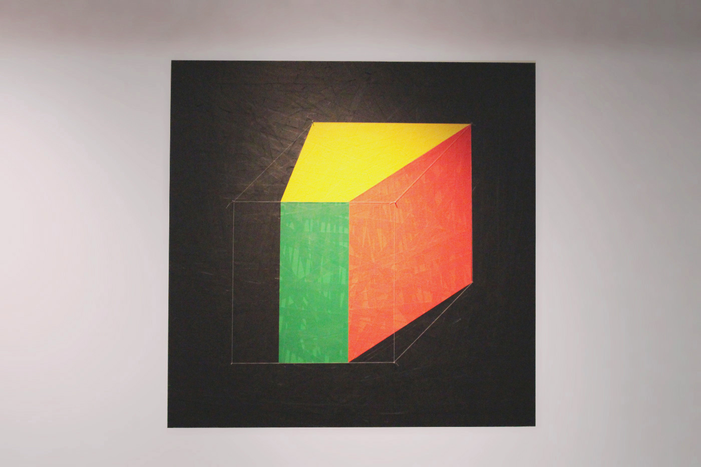